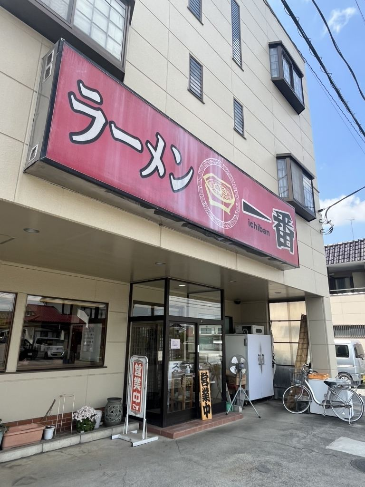
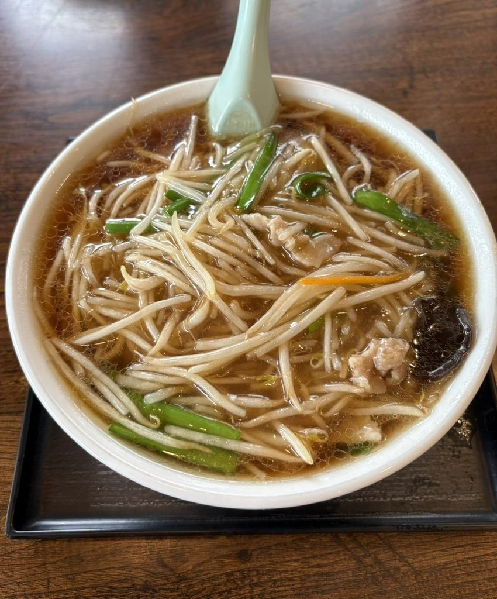
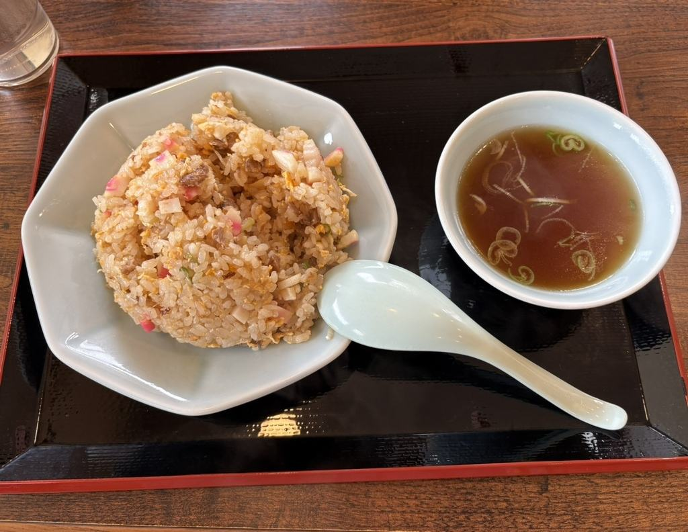
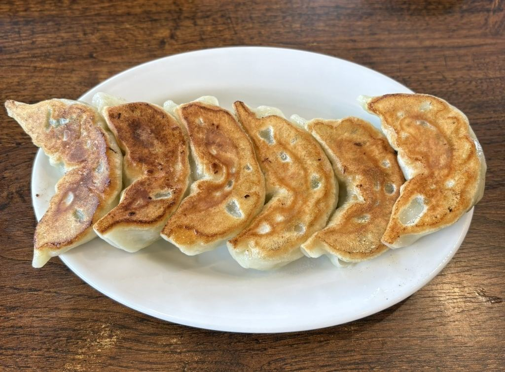
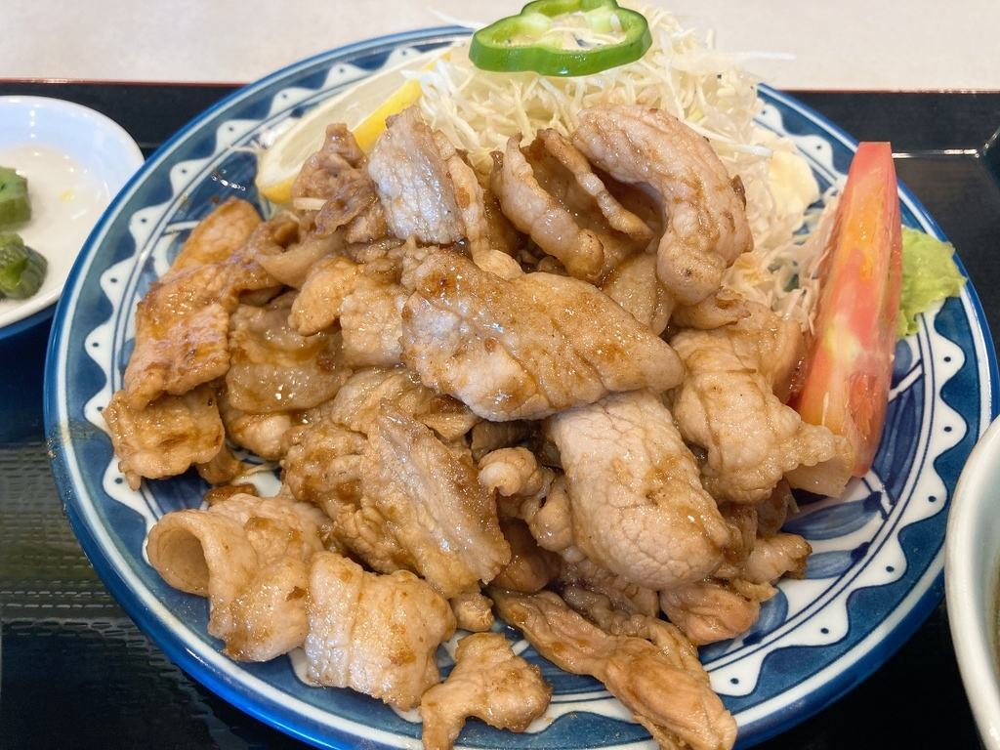
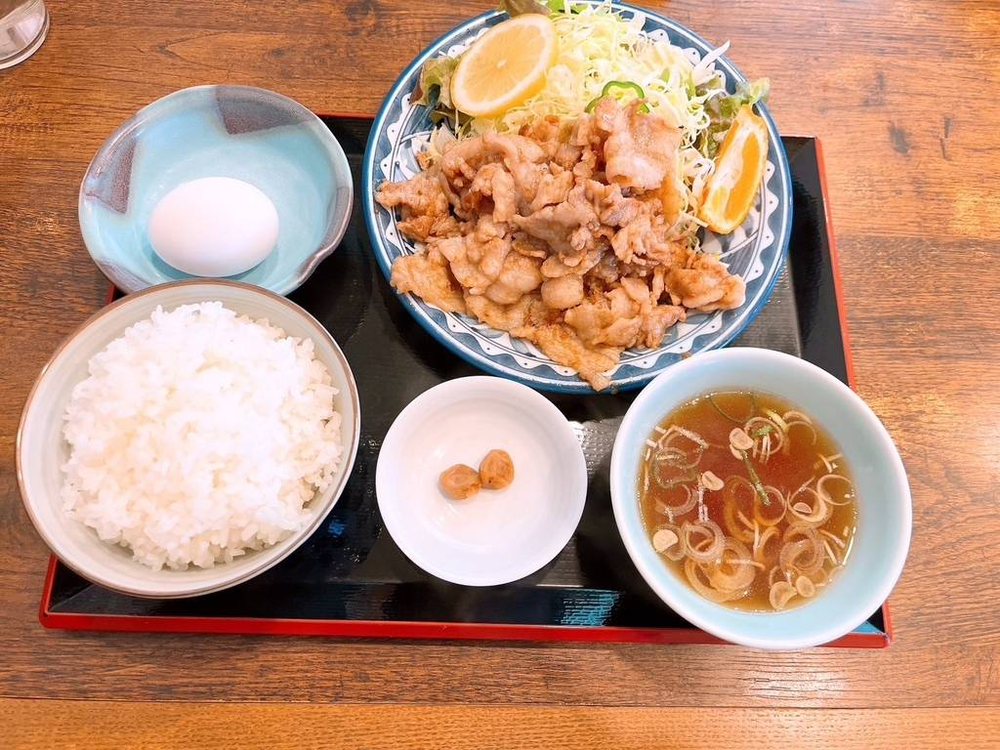
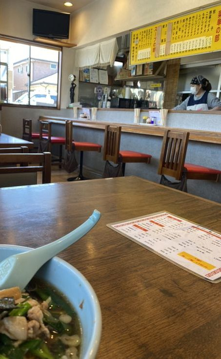
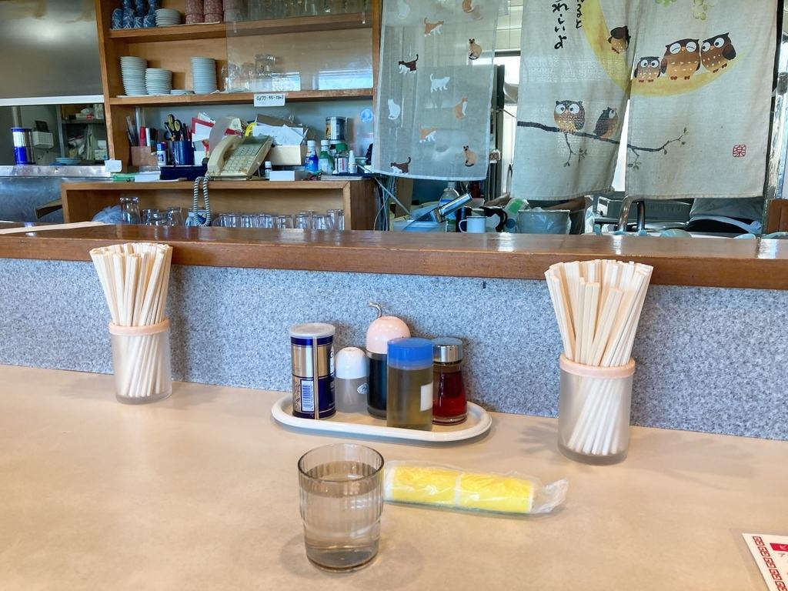
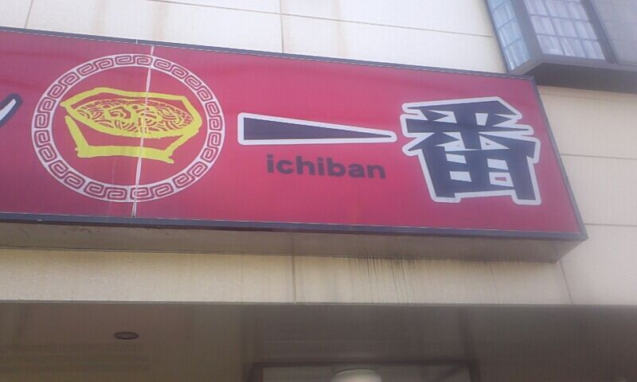
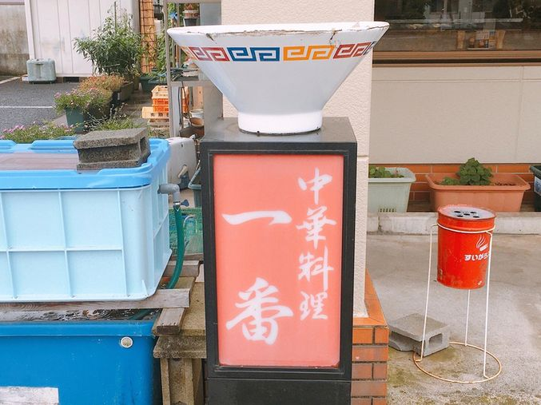

茨城県古河市 上辺見
昔ながらの中華そばと炒めもの、ごはんの付く定食をお出ししております。ご注文をいただいてから、お待たせしないうちにお持ちします。

はじめてお越しの方には、この三品をおすすめしております。



お値段は2026年6月現在のものです。
菜単の一品は、そのままでも、ごはん・汁もの・お新香・生玉子をお付けして定食にもいたします。


カウンターとテーブル、小上がりのお席がございます。なお、7才以下のお子様のご入店は、ご遠慮いただいております。


スピードも量も味も大満足！
お客様の声より
いつも、駐車場満車で、通り過ぎる人気店
お客様の声より
ここの醤油ラーメンが好きで、親にも連れて行ってもらったことがあります。
お客様の声より
赤い袖看板と、丼をのせた行灯が目印です。店の前と横に駐車場がございます。


| 店名 | ラーメン一番 |
|---|---|
| 住所 | 〒306-0234 茨城県古河市上辺見2310 |
| 電話 | 0280-32-3865 |
| ご予約 | 承っておりません（お電話はお問い合わせを承ります） |
| 営業時間 | 11:00〜14:30／17:00〜20:00（L.O. 20:00） |
| 定休日 | 水曜日 |
| ご入店 | 7才以下のお子様のご入店は、ご遠慮いただいております |
| お席 | カウンター・テーブル・小上がり |
| 駐車場 | 店の前と横にございます（お昼どきは混み合います） |
| お支払い | 現金のみ |